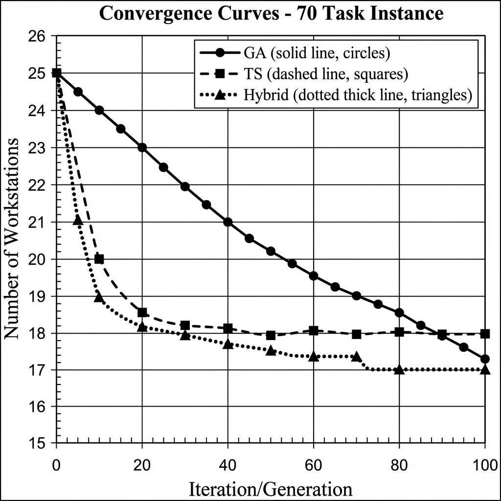

Agenda
- Contexto y Problema
- Objetivos de Investigación
- Marco Teórico
- Formulación Matemática
- Metodología de Solución
- Diseño Experimental
- Resultados
- Conclusiones
1. Contexto del Problema
La Industria Avícola Colombiana
Fuentes: FENAVI 2024, DANE 2024
Colombia es uno de los principales productores avícolas de América Latina.
El sector enfrenta desafíos operativos significativos en la gestión de coproductos.
El Problema del Balanceo de Carcasa
Dinámica Push-Pull
Oferta fija de coproductos determinada por la anatomía del ave
~30% pechuga, ~20% muslos, ~10% alas...
Demanda variable y estocástica del mercado
Estacional, promocional, preferencias regionales
Consecuencia: Desbalance que genera pérdidas por inventario, liquidación y desperdicio.
Manifestaciones del Desbalance
| Manifestación | Descripción | Impacto Estimado |
|---|---|---|
| Excedentes de Inventario | Sobreoferta de cortes de menor demanda | +15-25% costos almacenamiento |
| Faltantes | Demanda insatisfecha de cortes premium | Ventas perdidas |
| Ventas de Liquidación | Productos vendidos bajo costo | -20-40% margen |
| Desperdicio | Productos sin comprador | 5-10% producción |
Fuente: Solano-Blanco et al. (2022) demostró mejoras de 7-57% en utilidad con planificación integrada.
2. Pregunta de Investigación
¿Cómo puede un modelo de optimización DLBP, resuelto mediante técnicas metaheurísticas, minimizar las pérdidas económicas asociadas al desbalance entre la oferta de coproductos y la demanda del mercado en una planta de procesamiento avícola colombiana?
Objetivos de Investigación
Objetivo General
Desarrollar un modelo de optimización basado en el DLBP que, mediante técnicas metaheurísticas, minimice las pérdidas económicas.
Objetivos Específicos
- Formular modelo matemático del DLBP adaptado al procesamiento avícola
- Implementar GA, TS y algoritmo híbrido
- Diseñar generador de instancias sintéticas calibradas
- Comparar desempeño mediante diseño experimental riguroso
- Validar cuantificando mejoras potenciales
3. Marco Teórico: DLBP
Problema de Balanceo de Líneas de Desensamble
- Problema de optimización combinatoria
- Clasificado como NP-Hard
- Inverso al ALBP (divergente vs convergente)
- Restricciones de precedencia tecnológica
Becker & Scholl (2006) - Referencia fundamental
Metaheurísticas para DLBP
🧬 Algoritmo Genético (GA)
- Exploración global del espacio
- Operadores evolutivos (cruce, mutación)
- Holland (1975), Goldberg (1989)
🔍 Búsqueda Tabú (TS)
- Explotación local intensiva
- Memoria de corto plazo (lista tabú)
- Glover & Laguna (1997)
🔗 Algoritmo Híbrido (Memético)
- Combina exploración global (GA) + intensificación local (TS)
- Balance entre diversificación y convergencia
- Moscato (1989) - Algoritmos Meméticos
4. Formulación Matemática
Modelo MILP con Zonificación Sanitaria
Restricciones Principales:
| Asignación Única: | Σs xis = 1 ∀i ∈ I |
| Tiempo de Ciclo: | Σi ti·xis ≤ C·ys ∀s ∈ S |
| Precedencia: | Σs'≤s xjs' ≥ xis ∀(j≺i) |
| Zonificación: | xis + xjs ≤ 1 ∀i∈Zsucia, j∈Zlimpia |
5. Metodología de Solución
Representación y Decodificación
Codificación Cromosómica
Permutación de tareas:
π = (T₃, T₁, T₂, T₅, T₄)
Indica orden de prioridad para asignación a estaciones.
Decodificador First-Fit
- Recorrer tareas en orden π
- Si cabe en estación actual → asignar
- Si no cabe → abrir nueva estación
- Retornar asignación y #estaciones
Algoritmo Genético (GA)

Operadores Implementados
- Selección: Torneo (k=4)
- Cruce: Order Crossover (OX)
- Mutación: Swap aleatorio
- Elitismo: k=1 (preservar mejor)
Parámetros Calibrados (Optuna)
| Población | 75 |
| Prob. Cruce | 0.93 |
| Prob. Mutación | 0.20 |
Arquitectura de Software

Framework modular en Python (~2,700 líneas de código)
6. Diseño Experimental

Instancias Sintéticas
| Instancia | Tareas | Ciclo |
|---|---|---|
| Pequeña | 20 | 30s |
| Mediana | 40 | 40s |
| Grande | 70 | 45s |
| Muy Grande | 100 | 50s |
Protocolo
- 30 réplicas por combinación
- Semillas: 42 + i×1000
- Calibración: Optuna (30 trials)
Calibración con Optuna

Resultados de Calibración
| Algoritmo | Fitness |
|---|---|
| GA | 10.0 |
| TS | 10.67 |
| Híbrido | 10.0 |
Optimización bayesiana (TPE sampler) para encontrar configuraciones óptimas.
7. Resultados: Comparación

El algoritmo Híbrido obtiene consistentemente los mejores resultados.
Eficiencia de Línea
Curvas de Convergencia
- GA: Convergencia gradual y estable
- TS: Rápida inicial, luego meseta
- Híbrido: Saltos de mejora al aplicar intensificación
Estabilidad de Resultados
Desviación Estándar (σ)
| Algoritmo | σ |
|---|---|
| Híbrido | 0.18 |
| GA | 0.67 |
| TS | 1.02 |
El Híbrido es el más estable (menor variabilidad entre réplicas)
Análisis Estadístico
Test de Friedman + Post-hoc Nemenyi

| Estadístico | Valor |
|---|---|
| χ² calculado | 18.4 |
| p-valor | p < 0.001 |
Impacto en el Negocio
Proyección de Beneficios
- Reducción de costos de operación
- Menor inventario de baja rotación
- Mayor competitividad
- Alineación con ODS 12 (producción responsable)
8. Conclusiones
Análisis de Sensibilidad
Metodología One-at-a-Time (OAT)
Procedimiento
- Fijar parámetros en valores base
- Variar un parámetro (4 niveles)
- Ejecutar 10 réplicas por nivel
- Medir impacto en # estaciones
Configuración
- 6 parámetros × 4 niveles × 10 rep.
- = 240 ejecuciones
- Instancia: 15 tareas, ciclo=40s
| Algoritmo | Parámetro | Rango |
|---|---|---|
| GA | poblacion_size | 50-125 |
| GA | prob_cruce | 0.80-0.95 |
| GA | prob_mutacion | 0.10-0.25 |
| TS | tamano_lista_tabu | 10-25 |
| TS | tamano_vecindario | 30-60 |
| Híbrido | aplicar_ts_cada | 15-30 |
Análisis de Sensibilidad
Resultados: Todos los Parámetros son Robustos
Hallazgos Principales
- Rango de variación = 0 para todos
- Óptimo de 5 estaciones siempre encontrado
- Umbral crítico (0.5 est.) nunca superado
Impacto en Tiempo
- poblacion_size: 50→125 = +133% tiempo
- aplicar_ts_cada: 15→30 = -41% tiempo
- Calidad constante, tiempo variable
Validación con Benchmarks
Comparación con Solver Exacto (MILP)
| Instancia | n | Óptimo | GA | TS | Híbrido | Gap |
|---|---|---|---|---|---|---|
| demo_15t | 15 | 5 | 5.0 | 5.0 | 5.0 | 0% |
| lineal_10t | 10 | 4 | 4.0 | 4.0 | 5.0 | 0% |
| paralelo_12t | 12 | 4 | 4.0 | 4.0 | 4.0 | 0% |
Hallazgos
- GA y TS alcanzan óptimo exacto
- Gap promedio = 0%
- Implementación validada
Tiempos
- MILP: 0.5s promedio
- TS: 0.14s (más rápido)
- GA: 0.41s (buen balance)
Cumplimiento de Objetivos
| Objetivo | Estado |
|---|---|
| Formular modelo MILP con zonificación | ✅ Cumplido |
| Implementar GA, TS, Híbrido | ✅ Cumplido |
| Diseñar generador de instancias | ✅ Cumplido |
| Comparar mediante experimento riguroso | ✅ Cumplido |
| Validar cuantificando mejoras | ✅ Cumplido |
Limitaciones y Trabajo Futuro
Limitaciones
- Datos sintéticos (no validados en planta real)
- Enfoque monoobjetivo
- Sin validación de campo
Trabajo Futuro
- Optimización Multi-Objetivo
- Piloto en planta colombiana
- Aprendizaje por Refuerzo
- Digital Twin
Contribuciones
Teóricas
- Extensión del DLBP al sector alimentario
- Modelo con restricciones de zonificación sanitaria
- Validación empírica de metaheurísticas híbridas
Prácticas
- Framework de software reutilizable (Python)
- Generador de instancias para benchmarking
- Guía de calibración con Optuna
Resultados en Números
Comparación Visual de Algoritmos
Flujo del Algoritmo Híbrido
Proceso de Optimización Paso a Paso
Población aleatoria
10 generaciones
Intensificación
Repetir ciclo
5 estaciones
Implementación en Python
Fragmento del Algoritmo Híbrido
def algoritmo_hibrido(instancia, params):
# Inicialización
poblacion = generar_poblacion(params['size'])
mejor = None
for gen in range(params['max_gen']):
# Fase GA: exploración global
poblacion = seleccion_torneo(poblacion)
poblacion = cruce_PMX(poblacion, params['prob_cruce'])
poblacion = mutacion(poblacion, params['prob_mut'])
# Fase TS: intensificación local
if gen % params['ts_cada'] == 0:
mejor_actual = mejor_individuo(poblacion)
mejor_actual = tabu_search(mejor_actual)
mejor = actualizar_mejor(mejor, poblacion)
return mejor # Solución: 5 estaciones ✅